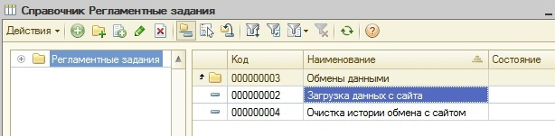
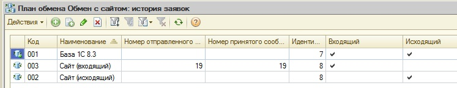

Инструкция по загрузке заявок покупателей с сайта в 1с83.
1. Основные тезисы:
- инициация процедуры обмена выполняется на стороне 1c83
- задание на загрузку оформлено в справочнике “Регламентные задания”, которое ссылается на встроенную в конфигурацию обработку “Обмен данными с сайтом (регламент) Заявки Покупателей”.

Параметр, передаваемый в обработку ‘Идентификатор узла обмена’ должен быть равен 8.
- регламент обмена (частота обращений к сервису) на данный момент не настроен, т.к. процедура в стадии теста. Выполняется ручной запуск по необходимости.
- обмен выполняется с помощью web-сервиса сайта GetExchangeMessage
- параметр ExchangePlan при обращении к web-сервису должно быть равен "orders_nn"
- АдресВебСервиса = "http://exchange.part-kom.ru/exchange/wsdl";
Для теста используем "http://testexchange.part-kom.ru/exchange/wsdl"
- cкорость расчета в среднем составляет 1 сек на 100 документов в пакете
- для автонумерации сообщений в 1с83 создан план обмена ‘Обмен с сайтом: история заявок’, где
узел с id = 7 – это получатель (база 1с83),
узел с id = 8 – это отправитель (Сайт), у которого должен быть выставлен признак ‘входящий’

параметр Sender при обращении к web-сервису по " orders_nn " должен быть равен 7.
- Документ в базе 1с83 формируется только в том случае, если по нему не зарегистрировано ни одной ошибки, т.е. если :
- данные, описывающие объект, соответствуют формату и заполнены полностью согласно списку
- ссылка на заявку не является дублем, т.е не была ранее загружена в 1с83
- в строчной части отсутствуют прайс-листы, ссылающиеся на разные склады
- на основании переданных UIDов, кодов и т.п. найден соответствующий объект бд 1с83 (КА, Договор, Номенклатура, Прайс и т.п.) и его реквизиты заполнены должным образом.
- выявленные в процессе загрузки ошибки регистрируются. Лог единый, т.е. формируется на весь пакет. Соответственно, запись в лог-файл и рассылка по почте выполняется по окончании обработки сообщения.
- документ в базу записывается, но не проводится. Это обусловлено низкой скоростью проведения. Поэтому, дабы не тормозить обмен с сайтом, должно быть настроено отложенное проведение заявок.
- С целью увеличения скорости загрузки данных предпринят ряд мер:
- Сначала читается весь пакет с контролем входных данных
- Выполняется пакетный запрос для всех объектов, дабы минимизировать обращения к базе на чтение
- Если по объекту выявлена хоть одна ошибка, дальнейшая обработка его реквизитов не выполняется
- Если количество ‘отбракованных’ объектов равно количеству объектов в пакете, переход к следующей стадии процедуры (например, от заполнения шаблона к записи документов) не выполняется.
- Отказоустойчивость процедуры обеспечивается тем, что запись в базу новых объектов выполняется только только при условии, что необходимые данные уже прочитаны, подобраны и шаблон будущих документов полностью заполнен. Т.е процесс не растянут во времени с момента получения посылки и до обработки последнего в цикле объекта. Транзакция открывается и закрывается по каждому из объектов, обеспечивая единовременную запись документа и данных поставщика (ЦеныНоменклатурыКонтрагента). Открытие транзакции выполняется в попытке, при исключении – она откатывается. Для каждого объекта предусмотрено до 10 попыток в случае востановимых ошибок базы.
- для разбора спорных моментов, история общения с сайтом регистрируется: полученные с сайта сообщения хранятся в РегистрСведений. ИсторияОбменаССайтом_ЗаявкиПокупателей, а связка № сообщения, сформированная заявка, uid хранится в РегистрСведений. ИсторияОбменаССайтом_ЗаявкиПокупателей_Результат. Таким образом, всегда можно выяснить в какой момент времени, на каком основании (№ сообщения, описание объекта) заведен документ.
2. Структура сообщения
Сообщения обмена формируются в соответствии со схемой xml, описанной в XDTO «СхемаОбменаПартКом83_Сайт» с типом «Документы.ЗаявкаПокупателя». С сайта передаются:
- UID заявки
- признак Подтверждения
- UID договора 1с7
- Логин ТТ
- IDSite
- UID Номенклатуры
- Данные поставщика (Код прайса, артикул/изготовитель поставщика, цена закупки)
- Количество/Цена/сумма
- сроки гарантированный/ожидаемый
URIПространстваИмен = http://ws-02.part-kom.ru/partkom83/hs/SiteExchange/XMLSchema. Путь прописан явным образом в менеджере ПланыОбмена.ОбменПартКом83_Сайт.URIПространстваИмен().
3. Местонахождение программного кода
Обработка загрузки сообщения выполняется в модуле объекта обработки ОбменДаннымиССайтом_Регламент_Заявки, а так же в менеджере ПланыОбмена. ОбменПартКом83_Сайт_состояние_заявок. ЗагрузитьСообщениеОбмена_ЗаявкиПокупателей
4. Оповещение
В случае обнаружения проблем (т.е. лог, содержащий ошибки, возникшие в процессе загрузки, не пустой) выполняется рассылка по e-mail, в соответствии с настройками в
Справочники.СобытияДляОтправкиЭлектронныхПисем.ОшибкаОбменаССайтом и РегистрСведений.НастройкиОтправкиСообщенийОбОшибках.
Помимо этого, лог дописывается в файл
\\Srv1c-nn\1C_exch\ASTOR_1C\push\Log\ 1C83_ЗагрузкаЗаявокССайта_Ошибки.txt
Плюс, в журнале регистрации появляются соответствующие записи, при неудачных попытках
ФабрикаXDTO.ПрочитатьXML
ИмяПланаОбмена <> "orders_nn"
ИдентификаторПолучателя <> Получатель.ИдентификаторУзла
НомерПринятогоРанееСообщения > НомерСообщенияВходящий
РезультатОбработкиВходящегоПакета.Отказ = Истина
5. Условия отбора Договоров:
- Владелец (КА) только из списка по переданным Логинам
(в соответствии с Справочник.УчетныеЗаписиСайта)
- ВидДоговора = Перечисления.ВидыДоговоровКонтрагентов.СПокупателем
- ДоговорПриостановлен = ЛОЖЬ
- ПометкаУдаления = ЛОЖЬ
- СлужебныйДоговор = ЛОЖЬ
- Организация заполнена
- Договор должен иметь ссылку на GUID договора 1с7, для чего опрашивается
РегистрСведений._ДляПереносаДанных
В случае, если по переданному с сайта УИДу 1с7, найден более чем один договор 1с83, то из выборки берётся ОсновнойДоговорКонтрагента. Естественное, соответствующий организации.
Договор обеспечивает заполнение таких реквизитов, как Организация, Валюта, Основной банковский счет, расчет срока оплаты и учета НДС.
6. Расчет даты оплаты:
Для расчета даты оплаты необходимы заполненные реквизиты Договора ‘Глубина кредита’ и ‘ВариантРасчетаДней’ (календарные/рабочие). Для расчета рабочих (банковских) дней должен быть заполнен Календарь. В Справочник.Календари предусмотрен предопределённый элемент Регламентированный. Именно данные по этому календарю используются в расчете. Для проверки/заполнения периода необходимо открыть форму элемента справочника Календари и нажать на ‘лупу’ справа от объекта – откроется форма регистра сведений ‘Регламентированный производственный календарь’.
7. Учет НДС
Признак учитывать НДС или нет берется непосредственно из карточки Организации. Если Организация по договору не определена, тогда берутся значения констант “ ФирмаДляФизЛиц” и “ ФирмаДляЮрЛиц” соответственно. Явной привязки к учетной политике фирмы не предусмотрено. Есть лишь проверка, что если Организация_ЮрФизЛицо = Перечисления.ЮрФизЛицо.ФизЛицо тогда УчитыватьНДС = Ложь и СуммаВключаетНДС = Ложь.
Признак СуммаВключаетНДС берется из ТипаЦен. Если ТипЦен в Договоре не указан, берется значение Константы ТипЦен_дляСайта.
8. Установка банковского счета
В случае, если у КА заполнен реквизит НашРасчетныйСчет, то вместо значения, указанного в карточке Организации как ОсновнойБанковскийСчет берется именно он. Принадлежность к фирме, естественно, проверятся. Т.е. таким образом оформляются исключительные ситуации, когда у фирмы более чем один счет и основной, по каким-либо причинам, не желателен для Контрагента.
9. Поиск Менеджера
Менеджер определяется в пакетном запросе через РегистрСведений.МенеджерыТорговыхТочек. В случае, если для КА не нашлось менеджера с Видом равным Перечисления.ВидыМенеджеров.Продажи, создается новый элемент справочника ‘Менеджеры’ с наименованием ‘Из_Интернета’. Так же записывается соответствующая связка в РегистрыСведений.МенеджерыТорговыхТочек.
10. Определение Склада
В момент заполнения строчной части заявки формируется список складов на основании данных прайса поставщика. В случае, если в списке более чем один склад, объект помечается как ‘бракованый’ и, соответственно, исключается из дальнейшей загрузки. Таким образом, склад берется из списка, если он единственный.
В случае, если список пустой (реквизит Склад в карточке Прайсах поставщика не заполнен), ищется соответствие Контрагент – Склад:
Константы.КонтрагентПополнениеСклада - Константы.СкладОсновной
Константы.Склад_Москва.КонтрагентПополнениеСклада - Константы.Склад_Москва
Константы.Склад_Самара.КонтрагентПополнениеСклада - Константы.Склад_Самара
Константы.Склад_Казань.КонтрагентПополнениеСклада - Константы.Склад_Казань
Константы.Склад_ТранзитСПб.КонтрагентПополнениеСклада - Константы.Склад_ТранзитСПб
Константы.Склад_Киров.КонтрагентПополнениеСклада - Константы.Склад_Киров
Константы.Склад_Уфа.КонтрагентПополнениеСклада - Константы.Склад_Уфа
Константы.Склад_НабЧелны.КонтрагентПополнениеСклада - Константы.Склад_НабЧелны
Константы.Склад_Пермь.КонтрагентПополнениеСклада - Константы.Склад_Пермь
Константы.Склад_Ижевск.КонтрагентПополнениеСклада - Константы.Склад_Ижевск
Константы.Склад_Ульяновск.КонтрагентПополнениеСклада - Константы.Склад_Ульяновск
Константы.Склад_Чебоксары.КонтрагентПополнениеСклада - Константы.Склад_Чебоксары
Если и после этого склад не определен, то берется значение константы СкладОсновной.
11. Проверка/Коррекция цены продажи
Если Склад является Бонусным, то реквизиты Цена,Сумма,СуммаНДС строчной части зануляются.
Если Склад не является Сувенирным или Бонусным, наличие нулевых цен будет расценено как ошибка и приведет к невозможности загрузить Объект в целом.
12. Определение Вида операции
Если КА является нашим ЮрЛицом,
то это Перечисления.ВидыОперацийЗаявкаПокупателя.ПополнениеСклада
иначе Перечисления.ВидыОперацийЗаявкаПокупателя.ЗаявкаПокупателя
13. Проверка качества справочных данных
В ходе разработки процедуры обмена был выявлен ряд недостающих (на тот момент) реквизитов у таких справочников 1с83 как организации, договора и т.п. и существенное расширен список констант, аналогично 1с77. Для корректного функционирования процедуры загрузки необходимо иметь корректно заполненные данные. Например, для расчета сроков оплаты необходим заполненный календарь. Поэтому, прежде чем запускать обмен в работу, необходимо убедиться в том, что, например, обмен 1с77-1с83 обеспечивает корректное заполнение реквизитов, т.е. правила были модифицированы и данные прогружены, выставлены значения констант. Для этого на форме обработки присутствует кнопулечка, с помощью которой можно получить соответствующий отчет.